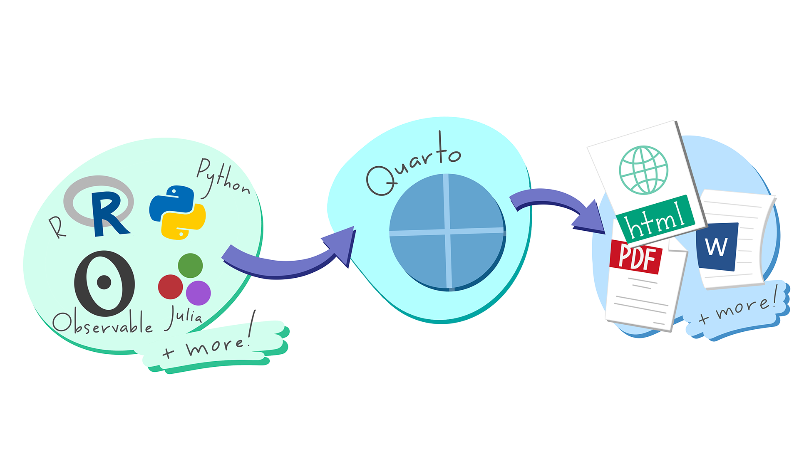
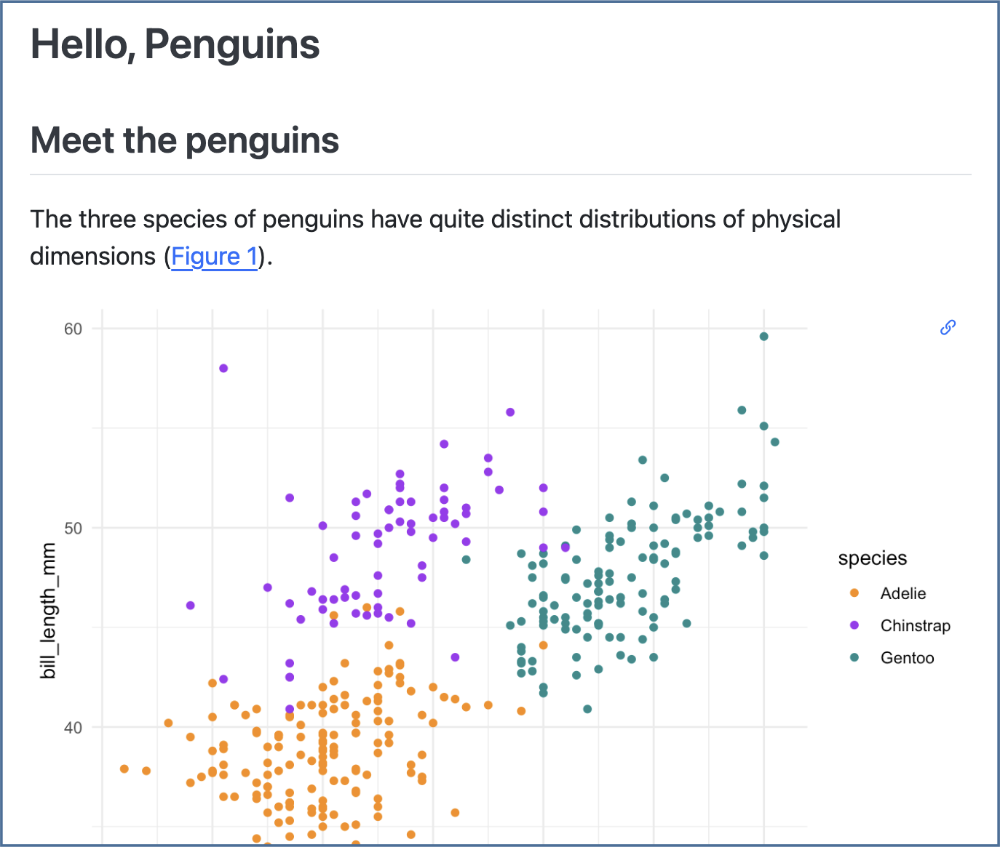

Download PDF
Publish and Share with Quarto :: Cheatsheet
QMD Edition
Overview
1
Author: Write and code in plain text. Author documents as .qmd files, or Jupyter notebooks. Write in a rich Markdown syntax.
Render: Generate documents, presentations and more. Produce HTML, PDF, MS Word, reveal.js, MS Powerpoint, Beamer, websites, blogs, books…
Share: Share your work with the world. Quickly deploy to GitHub Pages, Netlify, Quarto Pub, Posit Cloud, or Posit Connect.
Get Quarto
Get Quarto from: https://quarto.org/docs/download/
Or, use version bundled with RStudio.
Get Started
Render
Save, then render to preview the document output.
Terminal
quarto preview hello.qmdRStudio & VS Code: Use Render button
The resulting HTML/PDF/MS Word/etc. document will be created and saved in the same directory as the source .qmd file.
Rendered output: hello.html

Highlights in the rendered output
Features for scientific publishing. Cross references, citations, equations, and more.
Output integrated into document. Control how output appears with special comments in your code.
Behind the Scenes
When you render a document, Quarto:
- Runs the code and embeds results and text into an .md file with:
- Knitr, if any
{r}cells, or - Jupyter, if any other cells.
- Knitr, if any
- Converts the .md file into the output format with Pandoc.
Publish
Terminal
quarto publish {venue} hello.qmd{venue}: quarto-pub, connect, gh-pages, netlify, confluence, (v1.4) posit-cloud
RStudio: Use Publish button
Quarto Pub Free publishing service for Quarto content.
Posit Cloud Cloud-hosted, control access to project and output.
Posit Connect Org-hosted, control access, schedule updates.
Quarto Projects
Create websites, books and more
A directory of Quarto documents + a configuration file (_quarto.yml)
See examples at: https://quarto.org/docs/gallery/
Get started from the command line:
Terminal
quarto create project {type}{type}: default, website, blog, book, confluence, (v1.4) manuscript
RStudio: Use File > New Project
Include Code
Code Cells
Code cells start with ```{language}, and end with ```.
RStudio & VS Code: Use Insert Code Chunk/Cell.
```{r}
#| label: chunk-id
``````{python}
#| label: chunk-id
```Other languages: {julia}, {ojs}
Add code cell options with #| comments.
Cell options control execution, figures, tables, layout and more. See them all at: https://quarto.org/docs/reference/cells/
Execution Options
| Option | Default | Effects |
|---|---|---|
echo |
true |
false: hide code in outputfenced: include code cell syntax |
eval |
true |
false: don’t run code |
include |
true |
false: don’t include code or results |
output |
true |
false: don’t include resultsasis: treat results as raw markdown |
warning |
true |
false: don’t include warnings in output |
error |
false |
true: include error in output and continue with render |
Set execution options at the cell level:
```{r}
#| echo: false
``````{python}
#| echo: false
```Set options in code cells with #| comments and YAML syntax: key: value.
Or globally in the YAML header with the execute option:
---
execute:
echo: false
---Inline Code
Use computed values directly in text sections. Code is evaluated at render and results appear as text.
Knitr
Value is `r 2 + 2`.
Jupyter
v1.4
Value is `{python} 2 + 2`.
Output
Value is 4.
Set Formats and Options
Set Format Options
---
title: "My Document"
format:
html:
code-fold: true
toc: true
---- Indent format 2 spaces
- Indent options 4 spaces
Multiple Formats
---
title: "My Document"
toc: true
format:
html:
code-fold: true
pdf: default
---- Top-level options (e.g.
toc) apply to all formats
Common values for format: html, pdf2, docx, odt, rtf, gfm, pptx, revealjs, beamer3
Render all formats:
Terminal
quarto render hello.qmdRender a specific format:
Terminal
quarto render hello.qmd --to pdfOutput Options Table
| Option | html/revealjs | pdf/beamer | docx/pptx | Description | cell level? |
|---|---|---|---|---|---|
| Navigation | |||||
| toc | X | X | X | Add a table of contents (true or false) |
|
| toc-depth | X | X | X | Lowest level of headings to add to table of contents (e.g. 2, 3) |
|
| anchor-sections | X | Show section anchors on mouse hover (true or false) |
|||
| Style | |||||
| highlight-style | X | X | X | Syntax highlighting theme (e.g. arrow, pygments, kate, zenburn) |
|
| mainfont, monofont | X | X | Font name. HTML: sets CSS |
||
| theme | X | Bootswatch theme name (e.g. cosmo, darkly, solar etc.) |
|||
| css | X | CSS or SCSS file to use to style the document (e.g. “style.css”) |
|||
| reference-doc | X | docx/pptx file containing template styles (e.g. file.docx, file.pptx) |
|||
| NA | |||||
| include-in-header | X | X | Files of content to include in header of output document, also include-before-body, include-after-body |
||
| keep-md | X | X | X | Keep intermediate files (true or false), also keep-tex, keep-ipynb |
|
| LaTeX | |||||
| documentclass | X | LaTeX document class, set document options with classoption |
|||
| pdf-engine | X | LaTeX engine to produce PDF output (xelatex, pdflatex, lualatex) |
|||
| cite-method | X | Method used to format citations (citeproc, natbib, biblatex) |
|||
| Code | |||||
| code-fold | X | Let readers toggle the display of R code (false, true, or show) |
X | ||
| code-tools | X | Add menu for hiding, showing, and downloading code (true or false) |
|||
| code-overflow | X | Display of wide code (scroll, or wrap) |
X | ||
| Figures | |||||
| fig-align | X | X | docx only | Alignment of figures (default, left, right, center) |
X |
| fig-width, fig-height | X | X | X | Default width and height for figures in inches |
Knitr only |
| fig-format | X | X | X | Format for Matplotlib or R figures (retina, png, jpeg, svg, or pdf) |
|
Visit https://quarto.org/docs/reference/ to see all options by format
Add Content
Figures
Markdown
{#fig-LABEL fig-alt="ALT"}Computation
```{python}
#| label: fig-LABEL
#| fig-cap: CAP
#| fig-alt: ALT
{{ plot code here }}
```Or {r}
Tables
Markdown
|object | radius|
|:------|------:|
|Sun | 696000|
|Earth | 6371|
: CAPTION {#tbl-LABEL}Computation
Output a markdown table or an HTML table from your code.
Knitr
Use knitr::kable() to produce markdown:
```{r}
#| label: tbl-LABEL
#| tbl-cap: CAPTION
knitr::kable(head(cars))
```Also see the R packages: gt, flextable, kableExtra.
Jupyter
Add Markdown() to Markdown output:
```{python}
#| label: tbl-LABEL
#| tbl-cap: CAPTION
import pandas as pd, tabulate
from IPython.display import Markdown
df = pd.DataFrame({"A": [1, 2],
"B": [1, 2]})
Markdown(df.to_markdown(index=False))
```Cross References
Add labels:
- Code cell: add option
label: prefix-LABEL - Markdown: add attribute
#prefix-LABEL
- Code cell: add option
Add references:
@prefix-LABEL, e.g.You can see in @fig-scatterplot, that...
prefix |
Renders |
|---|---|
fig- |
Figure 1 |
tbl- |
Table 1 |
eq- |
Equation 1 |
sec- |
Section 1 |
Citations
Add bibliography file to the YAML header:
--- bibliography: references.bib ---Add citations:
[@citation], or@citation
RStudio & VS Code: Use Insert Citations dialog in the Visual Editor. Build your bibliography file from your Zotero library, DOI, Crossref, DataCite, or PubMed.
Callouts
::: {.callout-tip}
## Title
Text
:::Instead of tip use one of: note, caution, warning, or important:
tip
note
caution
warning
important
Shortcodes
{{< include _file.qmd >}} {{< embed file.ipynb#id >}}{{< video video.mp4 >}}CC BY SA Posit Software, PBC • info@posit.co • posit.co
Learn more at quarto.org.
Quarto 1.3
Updated: 2023-08.
Footnotes
Artwork from “Hello, Quarto” keynote by Julia Lowndes and Mine Çetinkaya-Rundel, presented at RStudio Conference 2022. Illustrated by Allison Horst.↩︎
PDFs and Beamer slides require LaTeX, use:
↩︎Terminal
quarto install tinytexPDFs and Beamer slides require LaTeX, use:
↩︎Terminal
quarto install tinytex